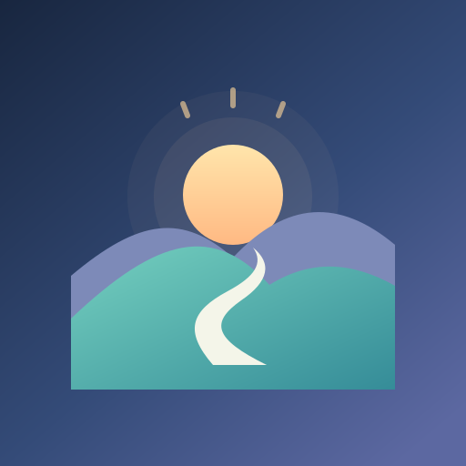

הערכה כללית למבוגרים: 30 מ״ל לק״ג, מעוגלת ל־100 מ״ל ובטווח בסיס של 1.5–3 ליטר. BMI מוצג בנפרד ואינו קובע צורכי שתייה.
סימון קריאטין מוסיף 300 מ״ל להצעה כהעדפה אישית, ולא כדרישה רפואית מבוססת לכל נוטלי הקריאטין. התוספת אינה מצטברת בכל שקילה. יעד ידני אינו משתנה אוטומטית.
ההערכה אינה מתאימה לילדים, להיריון/הנקה או להנחיית הגבלת נוזלים. במקרים אלה יש לקבוע יעד עם איש מקצוע. מזג אוויר ופעילות עשויים לשנות את הצורך.
המשקל מתעדכן מדיווחי השקילה. כשמחוברים, המדדים נשמרים גם בחשבון.
זהו סיכום אופציונלי. הוא לא סוגר את היום ולא משנה את הניקוד.
הזנת מדידה שומרת אותה במעקב המשקל ומשלימה את המשימה. הניקוד הוא על התיעוד, ללא קשר לערך המשקל.